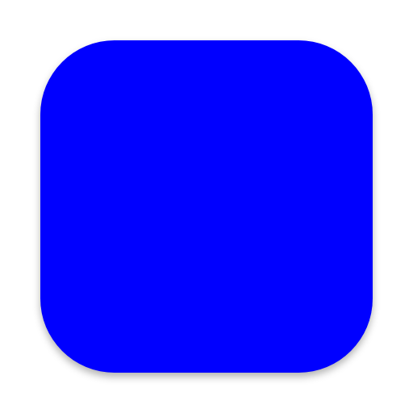

macOS maskable PWA icon test
Install
PWA reproducer
Install the test application
The manifest supplies a solid full-bleed blue icon with purpose: maskable. Masking, padding, borders, and transparent corners are easy to identify.
Checking installability...
Verification
macOS 26 and later
- Install this page in Chrome or Chromium.
- Locate the app under
~/Applications/Chrome Apps.localized/or the channel-specific apps folder. - Verify Finder, Dock, and Launchpad show the normal macOS 26 system shape without double masking, excessive padding, or an extra border.
- Open
Contents/Resources/app.icnsin Preview and verify it contains the original full-bleed blue square. - Launch the installed app and verify it opens normally.
macOS 25 and earlier
Verify Chrome still writes its existing masked icon into app.icns.
Expected app.icns contents

These references describe the PNG representation stored in app.icns, not Finder's system-rendered appearance. An actual macOS 26 Finder/Dock capture will be added when available.